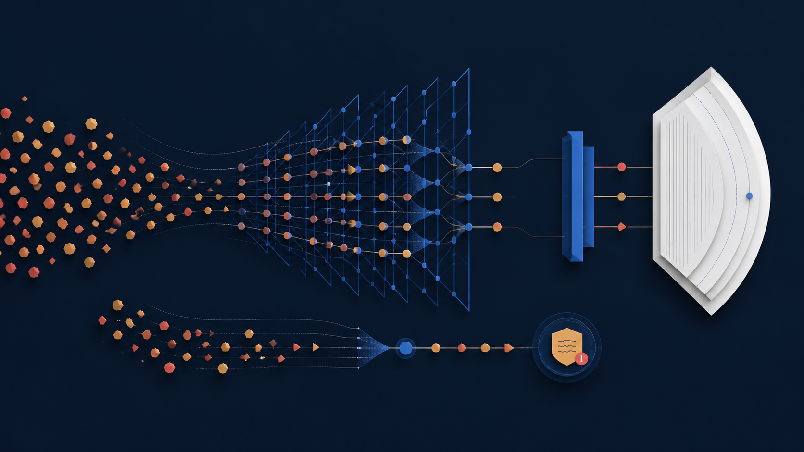
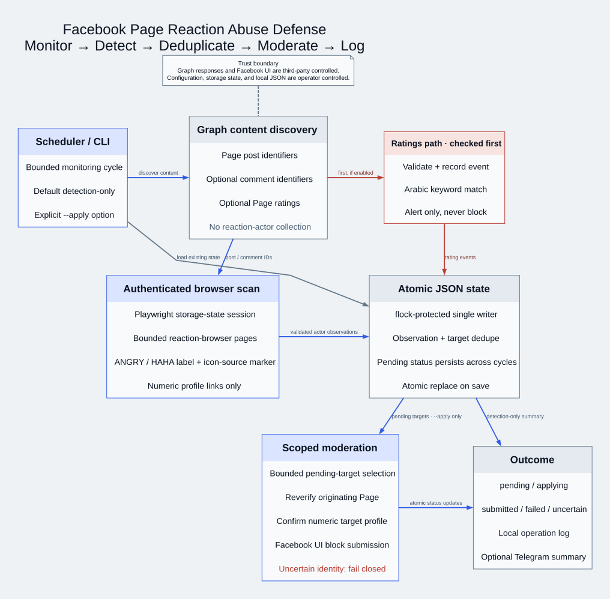
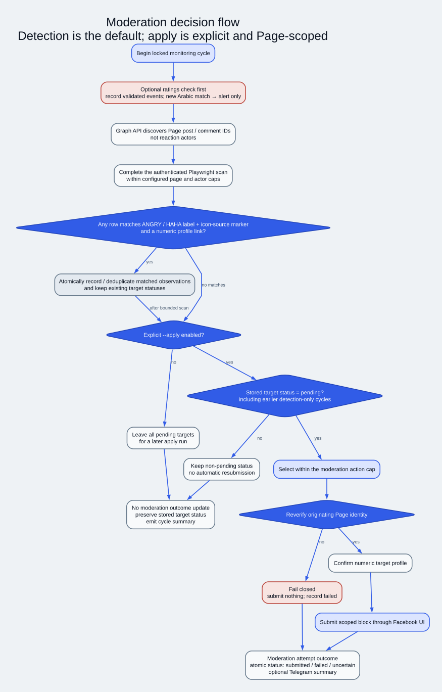

Repeated observations keep one target state
I deduplicate validated numeric profiles in atomic JSON state without discarding stored status. A pending target remains eligible in a later apply run.
Original Creator and Automation Developer
Monitor Detect Deduplicate Moderate Log

Coordinated Angry and Haha reactions can distort a Page's visible sentiment and force moderators into repetitive manual checks.
I deduplicate validated numeric profiles in atomic JSON state without discarding stored status. A pending target remains eligible in a later apply run.
The normal path makes authenticated reaction-browser reads and records state. Moderation mutation starts only when I explicitly select apply mode.
Arabic keyword matches in Page ratings create alerts only. They never enter the automated block path.
I separated Graph object discovery, authenticated reaction-browser collection with label-and-icon validation, decision state, moderation, and reporting so each boundary remains visible.

I use Graph to discover Page posts, optional comments, and optional ratings. It does not enumerate other users' reactions.
I read bounded reaction-browser pages through authenticated Playwright and require an Angry/Haha label plus its configured icon-source marker before accepting a numeric profile.
I persist observation keys and account target state in atomic JSON. Duplicate observations do not remove a pending target.
Explicit apply reuses the authenticated session, reverifies each target's originating Page, confirms the numeric profile, and fails closed on uncertainty.
I record the outcome locally and can send a concise Telegram notification when configured.
Detection performs authenticated browser reads but no moderation mutation. A later explicit apply run selects a bounded pending set, then reverifies the originating Page before each scoped block.

My role covered the full automation path from the Page signal to the recorded moderation outcome.
The silent demo uses only synthetic visuals and includes captions. It makes no live Facebook request.